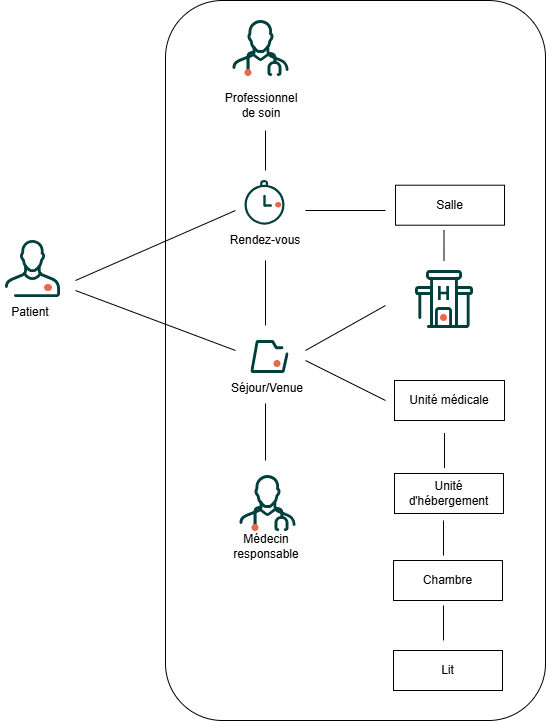

Guide D'implementation Bridge
1.1.0 - trial-use
Guide D'implementation Bridge
1.1.0 - trial-use
Guide D'implementation Bridge - version de développement local (intégration continue v1.1.0) construite par les outils de publication FHIR (HL7® FHIR® Standard). Voir le répertoire des versions publiées
| Official URL: https://enovacom.org/fhir/bridge/ImplementationGuide/EnovacomBridge | Version: 1.1.0 | |||
| Draft as of 2026-04-15 | Computable Name: EnovacomBridgeIG | |||
Ce guide est fourni par Enovacom pour aider les éditeurs à comprendre :
Ce document vise à expliciter la modélisation FHIR définie par Enovacom concernant les objets en relation avec :
Modélisation Métier :

L'onglet Documentation donne du détail sur les ressources FHIR utilisées et le modèle FHIR adopter dans la solution Bridge.
L'onglet API détaille les principales requêtes à utiliser pour échanger les données. Les différents codes retours HTTP y sont également détaillés.
L'onglet Ressources de conformité décrit les différents profils/extensions utilisés.
L'onglet Autres ressources donne accès à la spécification FHIR R4 et à une page de téléchargement donnant accès au package tgz des profils décrits dans ce guide.
Ce Guide d’implémentation est basé sur la version Release 4 de HL7 FHIR. Il dérive de l'IG FrCore v2.1.0 publié par Interop'Santé dont Enovacom est membre actif.
Le mapping HL7v2 FHIR s'appuie sur les travaux réalisés par IHE France concernant le profil PAM dans sa version 2.11.1.
Les syntaxes retenue sont le JSON et le XML pour la représentation des ressources FHIR.
| Role | Nom | Organisation |
| Auteur | Georges-Alexandre CHASTIN | Enovacom |
| Auteur | Benjamin FERNANDEZ | Enovacom |